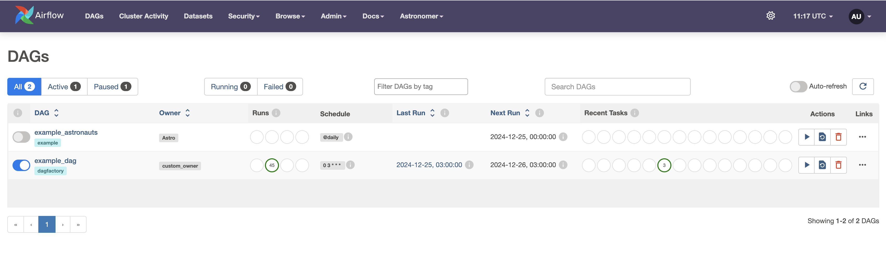
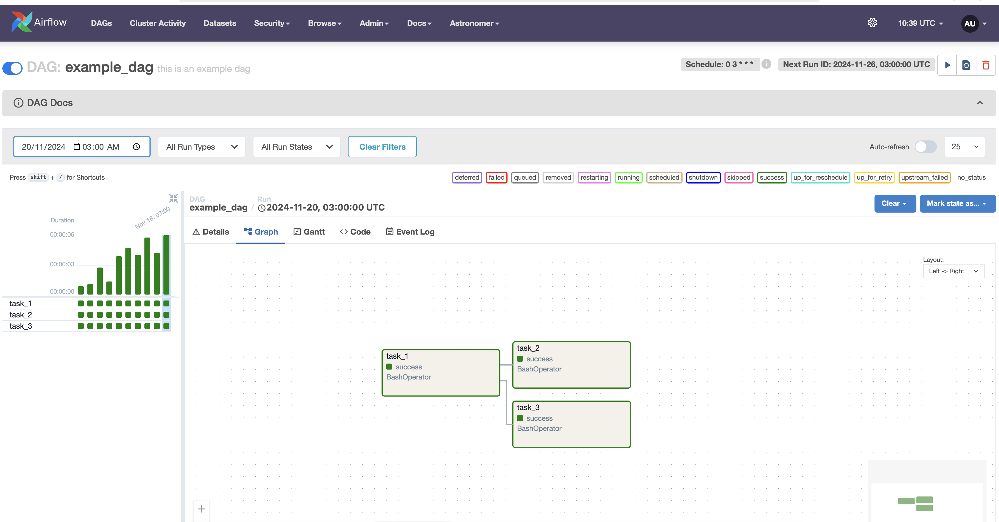

DAG Factory: Quick Start Guide With Astro CLI
DAG Factory is a Python library Apache Airflow® that simplifies DAG creation using declarative YAML configuration files instead of Python.
Prerequisites
The minimum requirements for dag-factory are:
- Python 3.8.0+
- Astro CLI
Step 1: Initialize Airflow Project
Create a new directory and initialize your Astro CLI project:
This will set up the necessary Airflow files and directories.
Step 2: Install DAG Factory
Install DAG Factory in your Airflow environment:
- Add dag-factory as a dependency to the
requirements.txtfile created during the project initialization.
Step 3: Define a DAG in YAML
DAG Factory uses YAML files to define DAG configurations. Create a file named example_dag_factory.yml in the $AIRFLOW_HOME/dags folder with the following content:
default:
default_args:
catchup: false,
start_date: 2024-11-11
basic_example_dag:
default_args:
owner: "custom_owner"
description: "this is an example dag"
schedule_interval: "0 3 * * *"
render_template_as_native_obj: True
tasks:
task_1:
operator: airflow.operators.bash_operator.BashOperator
bash_command: "echo 1"
task_2:
operator: airflow.operators.bash_operator.BashOperator
bash_command: "echo 2"
dependencies: [task_1]
task_3:
operator: airflow.operators.bash_operator.BashOperator
bash_command: "echo 2"
dependencies: [task_1]
Step 4: Generate the DAG from YAML
Create a Python script named example_dag_factory.py in the $AIRFLOW_HOME/dags folder. This script will generate the DAG from the YAML configuration
import os
from pathlib import Path
# The following import is here so Airflow parses this file
# from airflow import DAG
import dagfactory
DEFAULT_CONFIG_ROOT_DIR = "/usr/local/airflow/dags/"
CONFIG_ROOT_DIR = Path(os.getenv("CONFIG_ROOT_DIR", DEFAULT_CONFIG_ROOT_DIR))
config_file = str(CONFIG_ROOT_DIR / "example_dag_factory.yml")
example_dag_factory = dagfactory.DagFactory(config_file)
# Creating task dependencies
example_dag_factory.clean_dags(globals())
example_dag_factory.generate_dags(globals())
Step 5: Start Airflow Project
Once you've set up your YAML configuration and Python script, start the Airflow environment with the following command:
This will take a few minutes to set up. Once completed, you can access the Airflow UI and the generated DAG at http://localhost:8080 🚀.
View Your Generated DAG
Once Airflow is up and running, you can login with the username admin and the password admin. You should be able to see your generated DAG in the Airflow UI.
Generated DAG

Graph View

Checkout examples for generating more advanced DAGs.